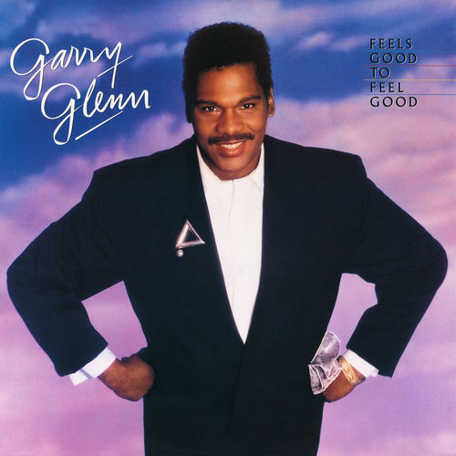

Garry Glenn
Garry Glenn was an American singer, songwriter and musician best known for his association with his songwriting partner Dianne Quander and wrote the 1986 hit song "Caught Up in the Rapture" recorded by Anita Baker. He also wrote "Intimate Friends" that was recorded by Eddie Kendricks and later sampled by Alicia Keys for the Grammy Award-nominated recording "Unbreakable."
Complete Discography & Tracklists (1)